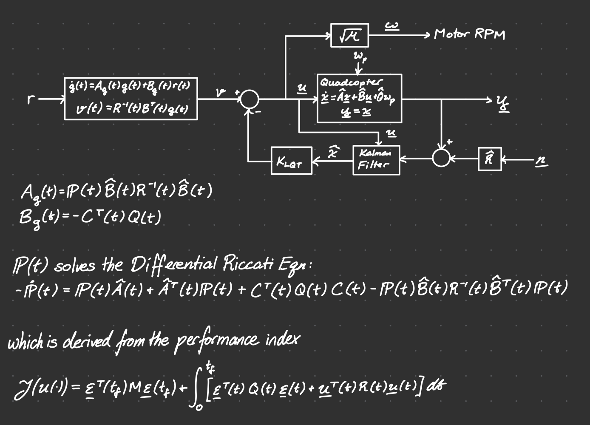
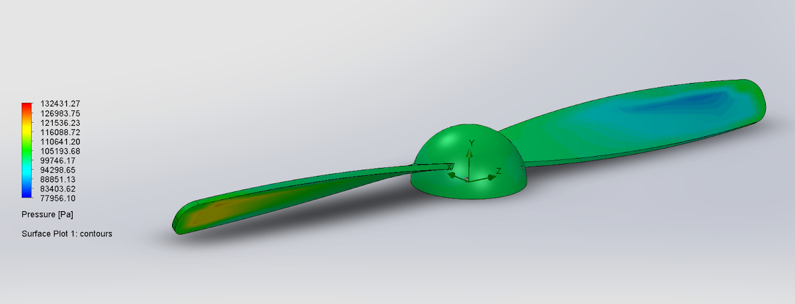
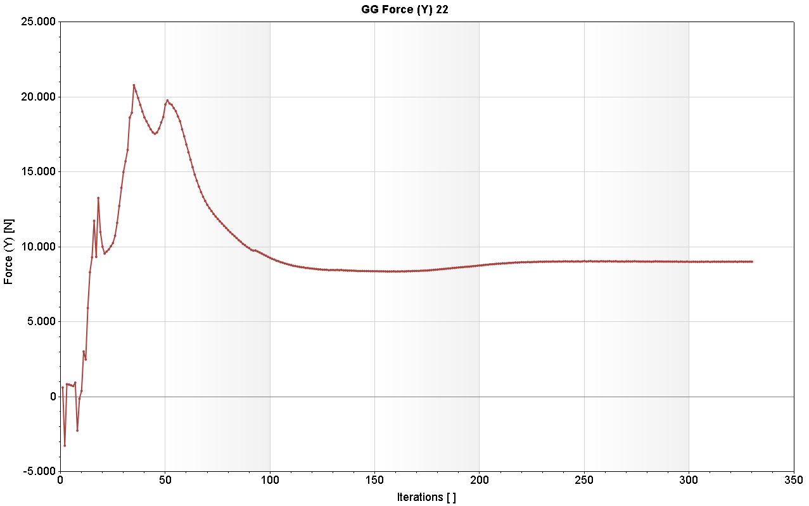
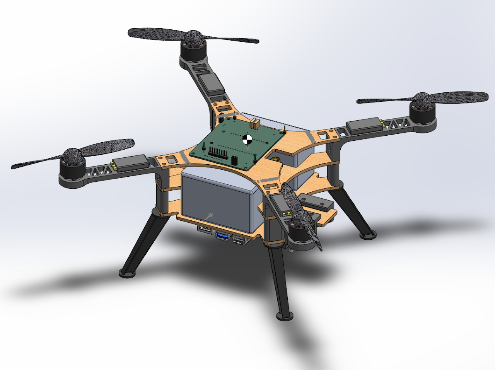
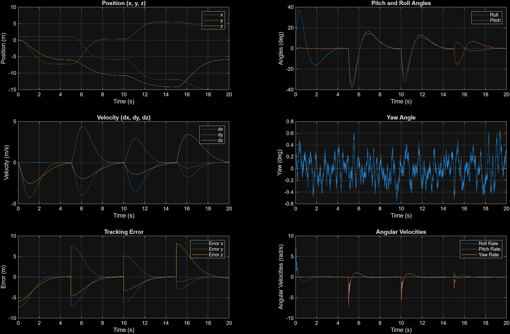
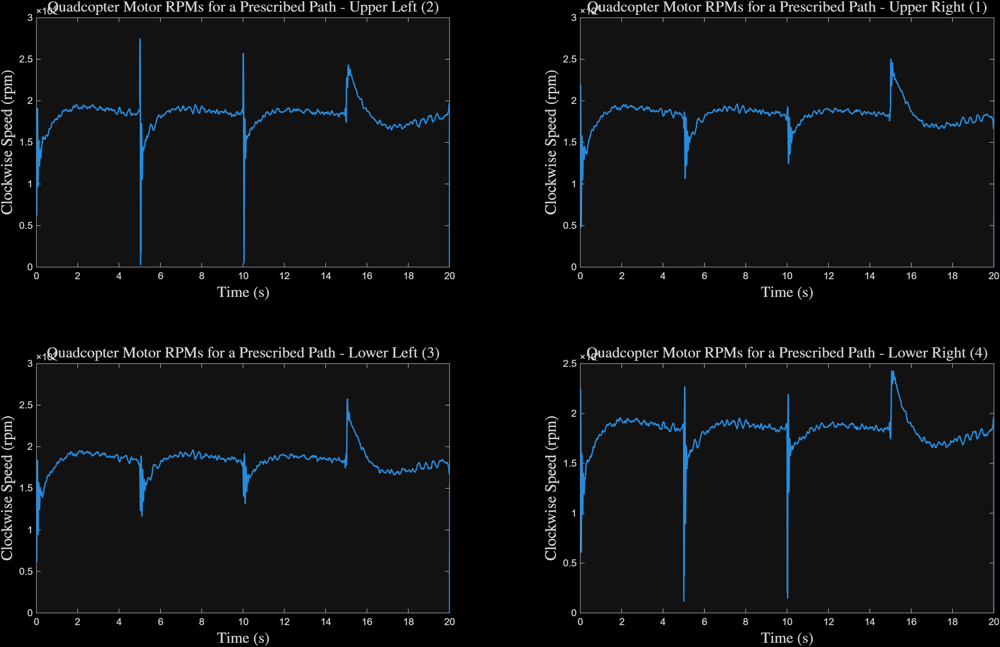
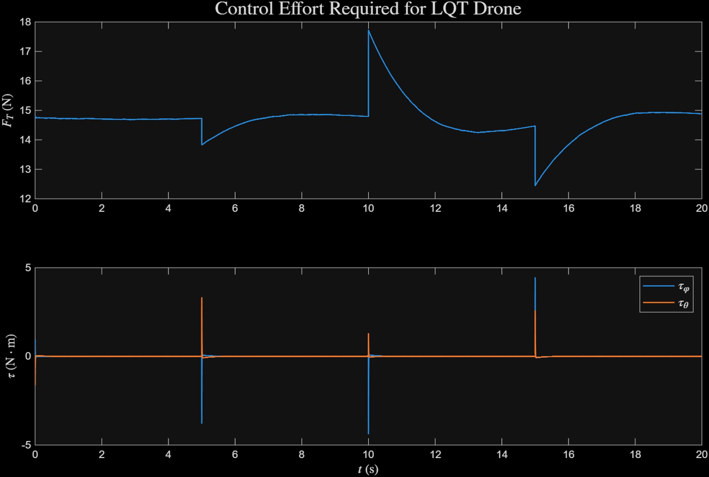
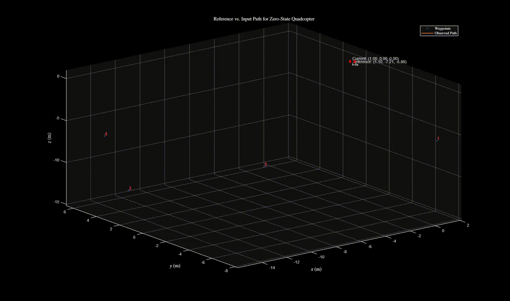

Full-system UAV integrating modeling, LQR control, state estimation, aerodynamic simulation, and hardware implementation.
The Tracker Drone is a fully integrated quadcopter platform designed for autonomous object tracking. The project combines control theory, state estimation, aerodynamic modeling, and embedded systems into a cohesive UAV architecture.

Full-state feedback LQR controller with Kalman-based state estimation and complementary IMU filtering.
A continuous-time state-space model of the quadcopter dynamics was linearized and controlled using a Linear Quadratic Regulator (LQR). The controller computes optimal state feedback gains minimizing quadratic state and control effort cost.

Parametric propeller model used for CFD simulation.

Computed lift force convergence behavior.

Full quadcopter mechanical assembly.
CFD airflow visualization over propeller surface.

Position deviation under LQR control.

Motor RPM response for prescribed trajectory.

Control Effort (Forces + Torques) imposed on Quadcopter.

Visualized Response to Randomized Step References.
The integrated LQT + Kalman architecture demonstrated stable tracking and rapid convergence with minimal steady-state error. However, it is important to note that the current implementation idealizes the actuators. In reality, there would be motor dynamics and transience, which are not simulated in this project. Future work will involve incorporating motor dynamics into the model and testing the controller on actual hardware to evaluate performance under real-world conditions.